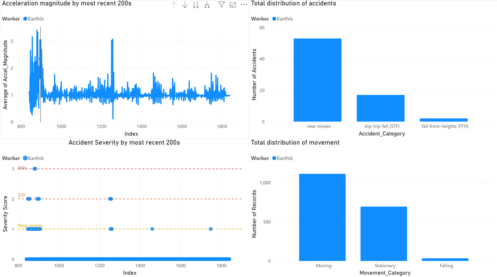
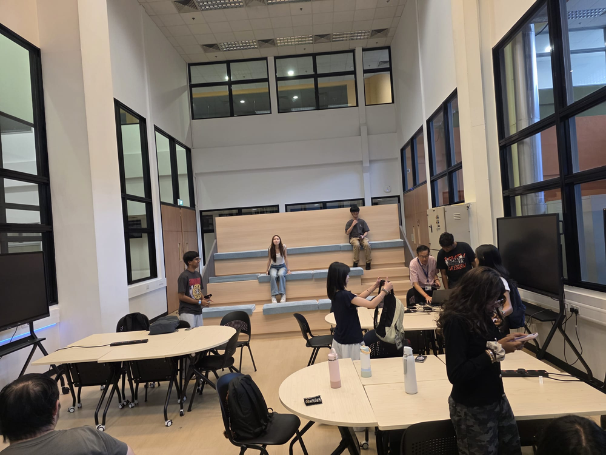
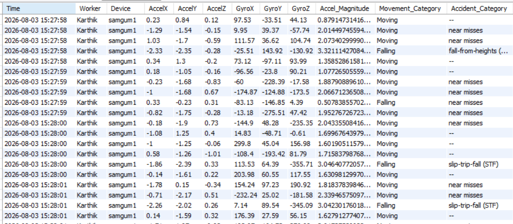
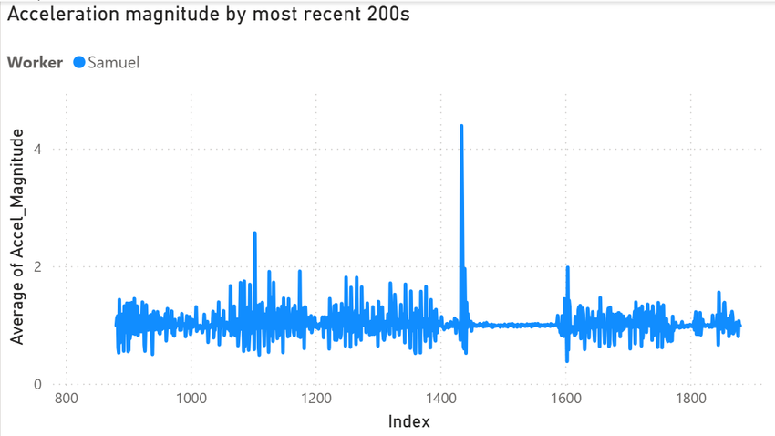
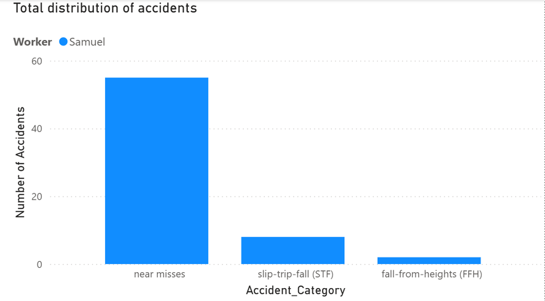

NESSO Safety Monitoring System.
A group project using NESSO wearables, Python, MySQL and Power BI to track movement and flag possible safety incidents.

Project overview
For our group Data Engineering Project, we built a worker-safety prototype using four Arduino NESSO N1 devices. The aim was to collect movement readings from several workers and flag possible slips, trips, falls and near-misses in one system.
- The devices sent accelerometer and gyroscope readings over Bluetooth Low Energy at 0.1-second intervals.
- Python collected timestamped CSV files and passed completed files for processing every 60 seconds.
- The processing program used acceleration magnitude and fixed thresholds to classify events, then stored records in MySQL.
- Power BI read the database through ODBC and required a manual refresh to show the latest data.
My software contribution was Main.py, the launcher that accepted worker and BLE device names and started the collection and processing programs together. I worked on making startup and shutdown easier to manage. We tested the system with four devices and simulated events at school, rather than deploying it on a construction site.

The problem
Movement readings are difficult to review on their own. Our group needed a way to collect data from several workers, flag possible incidents and inspect the results together.
The solution
We connected four NESSO devices to a Python collection and processing pipeline. The processed records were stored in MySQL and displayed in Power BI.
Follow a sensor reading.
Select a component to see its part in the project.
Wearable sensors
Four NESSO wearables collect movement readings at 0.1-second intervals.
View complete diagram
DataCollection.py
Receives movement data from four NESSO wearables through Bluetooth LE.
Preprocessing &
Upload.py
Organises sensor readings and flags possible slips, falls and near-misses.
Dashboard and testing
These images show our school test, database records and Power BI charts.
Power BI dashboard
Power BI brought movement readings and incident summaries into one view.

School field test
Our school testing session.

Worker records in MySQL
Individual worker readings stored in MySQL.

Acceleration and movement
Acceleration spikes helped us inspect possible incidents.

Incident categories
Incident categories recorded during testing.
What I worked on
- Built Main.py to accept BLE device names and worker names before a session.
- Used subprocess to launch DataCollection.py and Preprocessing & Upload.py together.
- Managed startup and shutdown from one launcher so the team did not have to start the programs separately.
- Explained the project objectives, data pipeline and Main.py launcher in the group presentation.
The collection and processing scripts were presented by another teammate, and the Power BI analysis was handled by the data and analysis role.
Technologies
Outcome
Our school test collected readings from four devices at the same time and recorded simulated slips, trips, falls and near-misses. Near-miss false positives were a known issue.
- Collection produced readings at 0.1-second intervals, with completed CSV files passed for processing every 60 seconds.
- Power BI required a manual refresh to show the latest MySQL records.
- The devices were held in our hands or placed in pockets during testing. Gyroscope readings were unreliable, so classification relied on acceleration magnitude.
- Hardcoded thresholds, device startup, BLE range and battery life still needed improvement. The school simulations did not establish accuracy on a construction site.